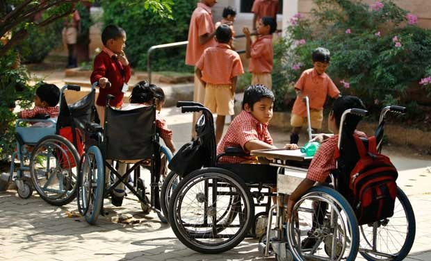
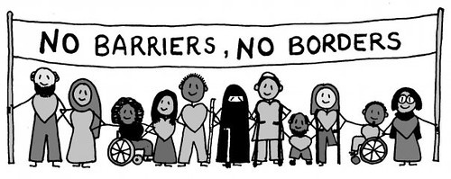
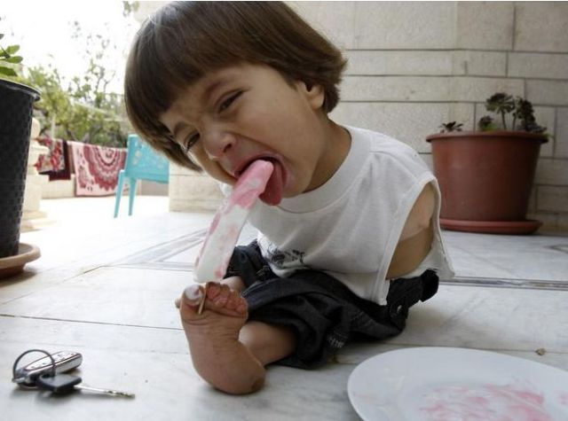
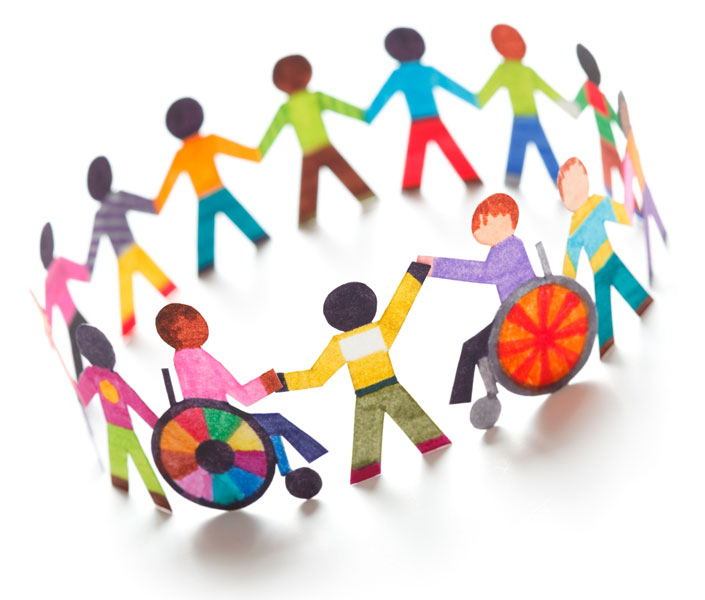
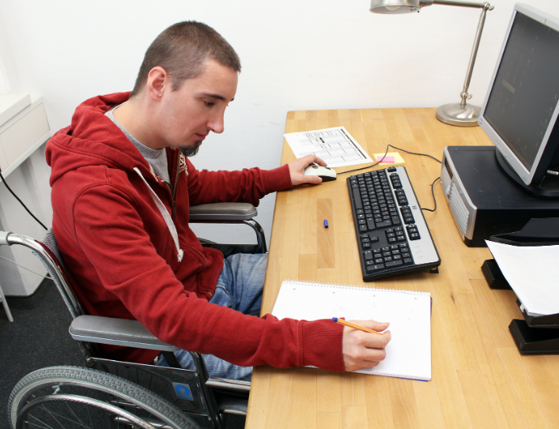
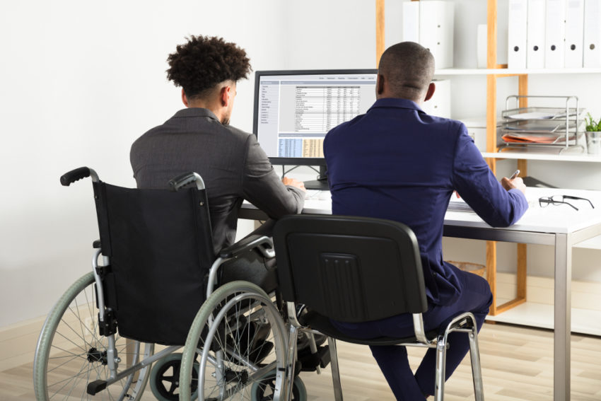
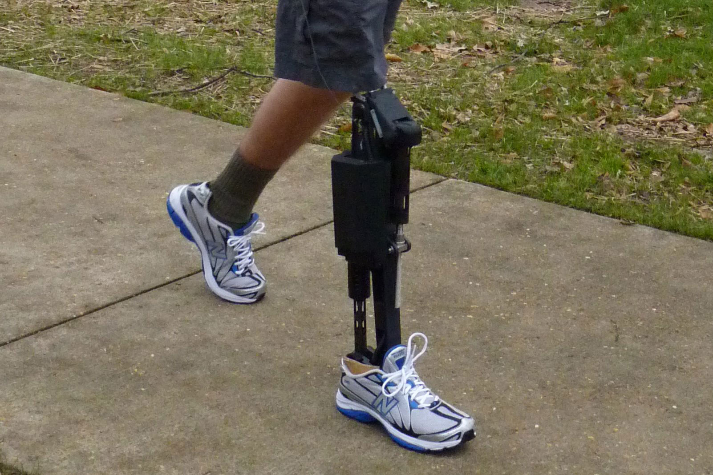
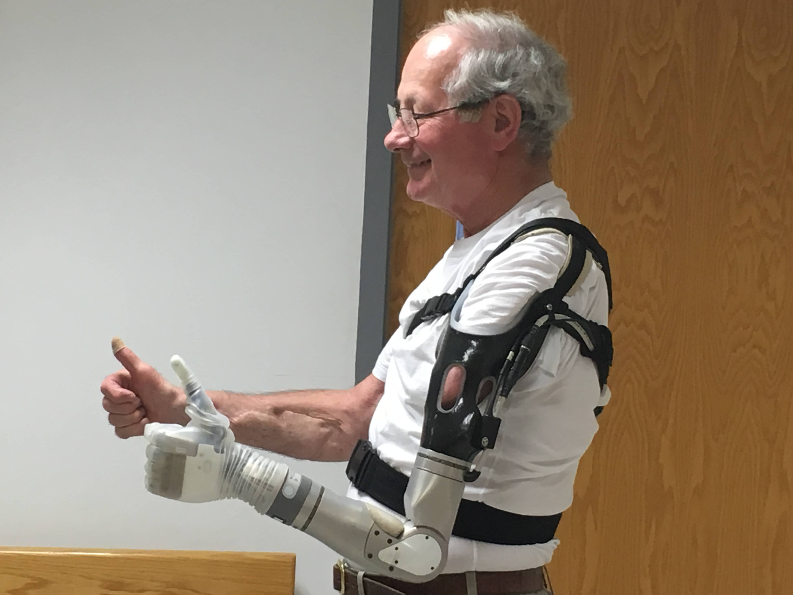
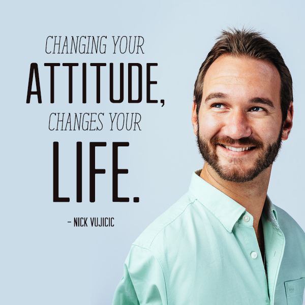

Disability of having No Arms or Legs
A physical disability can be caused by different factors.
It may due to natural aging, a chronic illness, or an unfortunate accident.
Phocomelia is a condition that involves malformations of
human arms and legs. Whichever the case may be, the result is a weakened functioning ability.
This affects one’s ability to accomplish day-to-day activities.And more often than not,
it results in less independence.

A person with a disability means a person with long termphysical,mental, intellectual or
sensory impairment which, in interaction with barriers,hinders his full and effective
participation in society equally with others. The estimated one billion people living
with disabilities worldwide face many barriers to inclusion in some key aspects of society.
As a result, they do not enjoy access on an equal basis as others which includes
areas such as transportation and employment but also social participation like politics
or entertainment.

We have to make them realise that - "My ability is Stronger than my Disability"

The role of a community towards the disabled individual can be easily elaborated
if we emphasize on creating friendly relationships with pure intent and understanding.
First of all —
the importance of forming a bond has hence permitted the individuals to collaborate
and empathize with the disabled individuals which thus automatically creates
a sense of worth and belonging.In contrast, a distressed disabled individual won’t be able
to be productive if he/she is left alone so therefore, building a connectivity bridge will
lead to finding out the similarities and the differences of each and every individual
within the community.

Challenges Faced by the disabled persons and solutions to overcome them:
Education of Children:
Every student with physical impairment has unique needs and, as parents,
you will know best how to support your child’s learning needs. Students
with physical impairment may require support to access and engage with
learning materials through specific teaching strategies, including the
use of assistive technologies.
Solutions:
state-wise strategies on education for children with special needs need
to be devised.There should be proper teacher training to address the
needs of differently-abled children and facilitate their inclusion in
regular schools Further there should be more special schools and ensure
educational material for differently-abled children.

General Solution-Online Education:
If travelling is becoming the major issue for them, then Online education
programs can be especially beneficial for disabled students, as they can
often take classes from home and avoid having to travel to a physical campus.
Additionally, online education programs often have more resources available
to disabled students than traditional educational institutions. These resources
can include disability-specific software and accommodations, as well as support
from disability services staff.
While online education programs can be a great option for disabled students,
it is important to do research before enrolling in a program.It is important
to find a program that is accessible and meets their specific needs.
Many online education programs are specifically designed for disabled students,
so be sure to look for these programs when researching schools.
Employment:
Even though many disabled adults are capable of productive work, disabled adults
have far lower employment rates than the general population.
The situation is even worse in the private sector, where much less disabled
are employed.
Solutions:
Disabled adults need to be empowered with employable skills
The private sector needs to be encouraged to employ them.
There are many programs and services available that can help disabled job seekers
to find employment in online.

To Make life Easier:
It is difficult for them to do their daily tasks.
They have to be depend on someone for their needs.
Solutions:
There are many different types of adaptive equipment that are available
to make everyday tasks easier for those who have a physical disability.
This equipment can include:
1.Wheelchairs
2.Artificial legs and arms
3.communication aids
and many other devices that can help to make life easier.

Wheelchairs can be adapted to fit the specific needs
of the person using them, such as adding armrests, footrests, and other accessories.
Another type of adaptive equipment that is commonly used is communication aids.
These devices can include anything from voice synthesizers to texting devices.
They can help those who have a physical disability to communicate with others more easily.
There are many different types of communication aids available, and they can be
customized to fit the specific needs of the person using them.

Loosing self Confidence:
Solution:
People with disabilities need to be better integrated into society by
overcoming stigma There should be awareness campaigns to educate and
aware people about different kinds of disabilitySuccess stories
of people with disabilities can be showcased to inculcate positive
attitude among people.
For Example challeges faced by the Nick Vujicic who was born
without arms & legs and how he overcame them.
